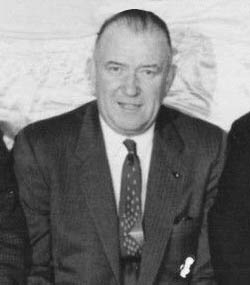

The league expanded to 30 with the Charlotte Bobcats in 2004, following the 2002 relocation of the Charlotte Hornets to New Orleans. In 2014, the Bobcats rebranded to and acquired the history of the Charlotte Hornets, with the now New Orleans Pelicans being retroactively recognized as a new franchise founded in 2002
The league was founded in New York City on June 6, 1946, as the Basketball Association of America (BAA). It changed its name to the National Basketball Association on August 3, 1949, after merging with the competing National Basketball League (NBL).The NBA is a 70-year-old organization born from innovation. It was June 1946 in New York City when Boston Garden owner Walter Brown realized that major ice hockey arenas, which were vacant most nights, could be used to host basketball games.

How did the NBA get invented?
The NBA began life as the Basketball Association of America in 1946 and played under that monkier for 3 years before, in 1949, merging with the National Basketball League and changing names to the NBA. The BAA started out with 11 teams in 1946 but lost four of them before the start of the next season.
What was first NBA game?
On November 1, 1946, the New York Knickerbockers beat the Toronto Huskies in the first NBA game, 68-66. The Knickerbockers are led by guard Leo Gottlieb, who scored 14 points in the game played before 7,090 fans at Maple Leaf Gardens in Toronto.
How did the NBA become popular?
The rise of the superstar player Michael Jordan skyrocketed this league to its global standing. The NBA saw the growing popularity of Michael in the 90s as what was needed to be a dominant league in the basketball and world sports scene globally
Playoff Jimmy is real, and spectacular … but he also might be running out of gas
What Butler has done since joining the Heat four years ago is incredible. This is his second trip to the Finals in four seasons. Last season, he and the Heat were one late-Game-7 missed jumper away from another Finals appearance. In those four seasons, he’s played 59 playoff games and averaged 25 points, 6.9 rebounds and 5.6 assists. He rarely turns the ball over, and hounds opposing stars. He also has a knack for coming through in big moments, in a way where it feels like he’s taken snatching the soul out of the body of his opponents. But it’s also worth pointing out that he’s shot just 42.4% percent over the past two series, and against the Celtics, there were times in Games 5, 6 and 7 where he didn’t seem to have any explosion or lift.
The Heat’s chances against the Nuggets could very well rest on Butler's ability to resummon that explosiveness that helped him break the Milwaukee Bucks.
What is Jimmy Butler known for?
Best known for his spells with the franchise which drafted him, the Chicago Bulls, and his current team, the Miami Heat, Butler has also played for the Minnesota Timberwolves and Philadelphia 76ers. Butler has led Miami to the NBA Finals twice and taken his own game to new heights in the process.